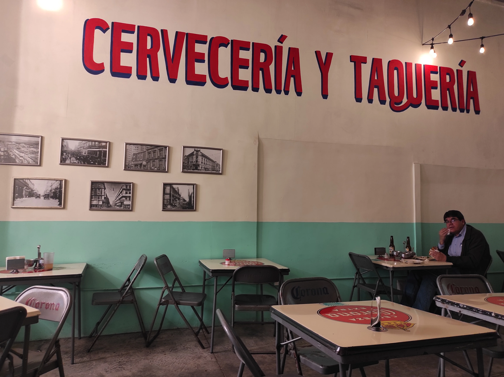

México is one trip I planned and dreamt for so long that once I was on the airplane I felt almost like I could not believe that it was happening. The destination is a dream for many: sandy beaches, a cloudy bright sky and a certain excitement related mostly to danger and mob in particular have been the scenario of many stories covering the last centuries of literature, cinema and music.
For the occasion I brought along with me the great Malcolm Lowry and his alcoholic madness included in a book called "Under the Vulcano". I found out about the guy just a few weeks before leaving and his wandering between Popocatepetl and Iztaccihuatl definitely draw my attention.
I was on a bus journey down to Puebla still dealing with the jetlag the first time I saw Iztaccihuatl after having spent the first 4/5 days in México City and the view was astonishing. Despite of losing that cosiness that México City with all its dangerous shadows walking in the dark was able to give me, I felt a certain familiarity with the surrounding vulcanic region and I also realised I was entering chapter II of my own journey. Seeing a smoking vulcano makes you feel like you should not rely too much on your comfort since things in life can change quickly and makes you learn how important is for oneself to adapt to situations that can happen on the road at any time.
Part of the concept of my last work "Compulsive Seeking" (the recall to number twelve, like the chapters in the book, the hours in a day and the months in a year) and the song Calle Nicaragua are definitely inspired from Malcolm dark journey through his fragile self and the external tropical danger.
Regarding my own journey, the goal I set for myself was to escape as soon as I could a certain kind of mass tourism and focusing more on casual travellers and adventurers, some of them I found very impressive in their committment to challenge the 'mala', the heat, the spicyness, and most of all the wild life of the country in order to make something real out of their trip.
Edward James is an eccentric figure. Born in England from an aristocratic family, he always followed his dreams and lived somehow an extraordinary life. His devoted interest for art in general (he was a poet and a painter himself) made him support surrealism and financing some of its most famous interpreters like Salvador Dalí.
James was a visionary himself and somehow had an utopistic vision in his mind: a garden of Eden. He found the right spot to fulfill his ambition 7 hours driving north of México city in a place called Las Pozas, based in a subtropical rainforest in the Sierra Gorda.
The place took a while to be built. It started in 1949 to be finished (more or less) in 1984, the year of his death. The attention to details and the focus on tropicalism are the things that would mostly catch the attention of the visitors.

When Eisenstein (one of the most influential figures in the Soviet cinema) went to México in 1930, it was mostly to please his interests in pre-colonial cultures and Méxican revolution. Both the soviets and the méxicans (and I would add french people too) have a common history concerning the withstand against a central power and during those times México became a fascinating country for lots of rebellious artists for its surrealistic environments and its resiliance.
The movie Eisenstein shooted while being there never made it to the pubblic because of lack of investments and some technical issues, but the material that has been recorded is still available to the public and can be still seen nowadays on 35mm. Luckily I had the chance to see it at the Arsenal institute for film in Berlin.
The thematics are various, mostly including death and life and how precolonial México dealt with the topic before the arrival of the spanish. Seeing the whole concept in pre-colonial times looks to me a little bit less dramatic, time slows down and people smile innocently. Overall the whole shooting transmits a certain tranquility that can not be felt in other parts of the work, like in one of the next scenes where an audience assists a corrida de toros.
When I entered Palacio de Bellas Artes, a beautiful art nouveau-styled-palais in the historical center of México city near parque Alameda, I knew I was going to visit something very big and controversial for the time it was made, the murales of Diego Rivera.
Walking around the palais I had the time to reflect on how meaningful and shocking the size of a work of art can be, especially when it is meant to be made for political purposes, regardless if it is showing a naked big breasted blindfolded woman in chain or a group of people rioting for freedom. The most famous murales in the site is probably the one called Man at the Crossroads (1933), commissioned to Rivera by the Rockfeller center with the goal of representing ethical and technical evolution, socialism and capitalism. The controversy started when Rivera decided to add an image of Lenin, after the murales was labeled as part of an "anti-capitalistic propaganda", replaced and possibly destroyed. Afterwards Rivera decided to repaint it in México, giving it the original title.

Mazunte except from being the last destination in my mexican trip was probably also the highlight of it. This very little town on the pacific coast has become sort of hip in the last decade and yoga studios, fancies café serving drinks with soya milk and a bunch of other western stuff made their way into this remote part of the world. Despite of all nowadays Mazunte still hasn't reach that level of mass tourism that it is probably gonna reach in the next years and the atmosphere in town is still overall enjoyable and laid back.
On my way there from Puerto Escondido I was mainly focusing on two numbers on my phonebook. One was the number of Jane that was supposed to join me in the following days and since she has not found a place to sleep yet, I felt the responsibility of finding and accomodation for both of us. The other was the number of an unknown local guy that I had from a previous meeting because he was likely to have free (and possibly cheap) accomodations in town.
Luckily me and Jane could coordinate and showed up to the place the guy told us at the same time. The site was partly shared with the family and various rooms were available on the property. Since I am generally pretty adapatable, I left Jane the final say and when she agreed, we both checked in this blue painted double room on the ground floor. The room was unfinished as most of the other things in the property and the guy seemed to work daily in order to improve the state of his business, possibly also considering the fact that the place will become in the future his biggest source of income and probably even more.

A few weeks later I went into casa Azul, the beautiful casa where Frida Kahlo lived her troublesome and painful life. The house has become the mecca of México City since Kahlo has turned nowadays into a female heroine and a symbol of woman emancipation. The house truly looks beautiful. The central patio filled with tropical plants and all the surrounding rooms around really give the place a sense of comfort and tranquililty that I assume most of humans can feel.
While I was visiting the place a storm occured over México City and for a countless amount of time (I bet it was no longer than 5 minutes) the light went away leaving all the property in pitch dark. The blue-painted room I shared with Jane less than a week before suddendly came into my mind, reflecting the darkness of casa Azul (which was painted blue because of the admiration Frida had for the indigenous people of México according to someone) and our relaxed joyful half unfinished nest will be remembered as a place in the world where once again I was able to feel home.